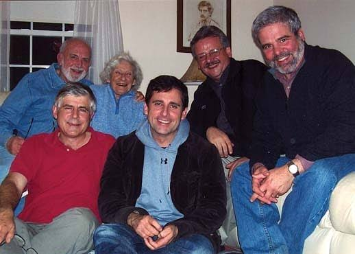
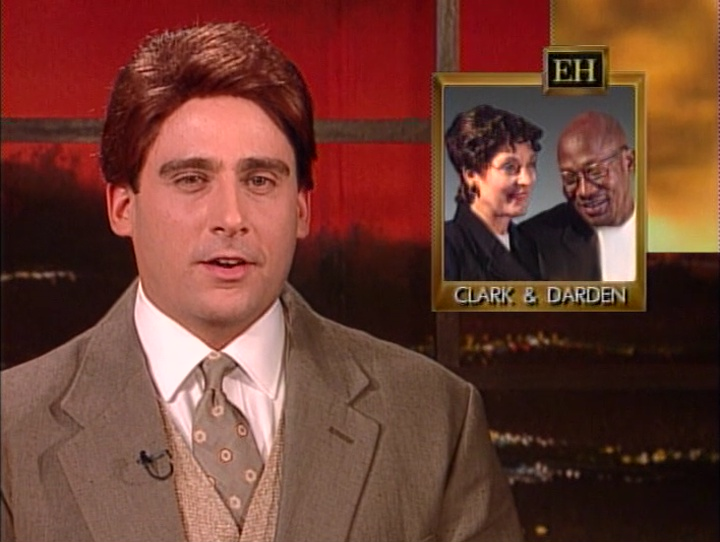
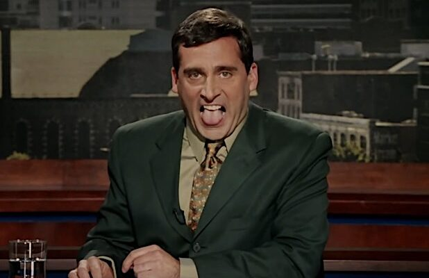
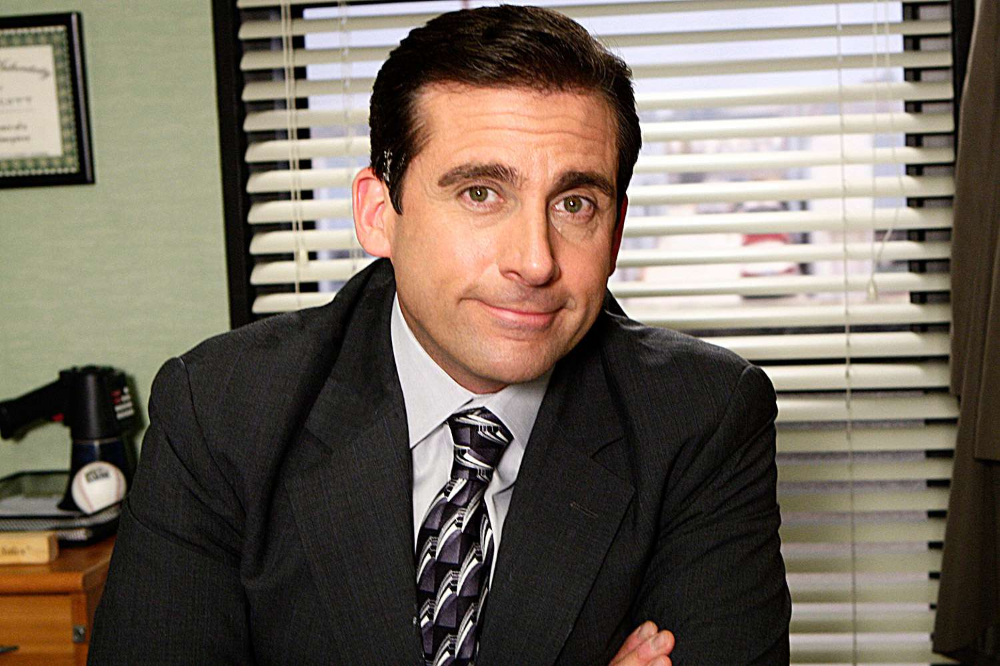
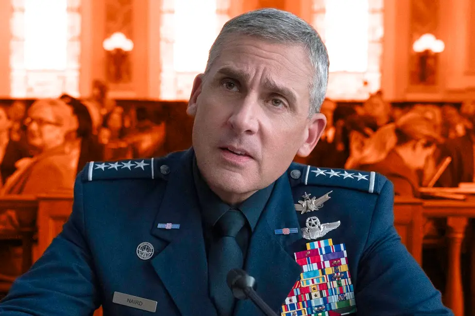

Biographie
-
Enfance & famille
Steve Carell est né le 16 août 1962 à Concord, dans le Massachusetts. Il est le fils d'Edwin Carell (né Caroselli), ingénieur éléectricien, et de Harriet Carell (née Koch), infirmière psychiatrique. Sa famille paternelle est d'origine Allemande et Italienne, et polonaise du côté maternel.

Famille de Steve Carell -
Débuts de carrière
Son premier travail a été celui de facteur à Littleton. Malheureusement, il a dû arrêter après 7 mois seulement par manque d'efficacité. Son patron a même dû partir à sa recherche avec une lampe torche, car il n'était toujours pas rentré à 21h.
En 1991, il fait ses débuts au cinéma dans des rôles secondaires. Il se marie en 1995 et poursuit sa carrière d'acteur en enchaînant les auditions pour la télévision et le cinéma. En 1996, il apparaît dans une série ABC qui se termine après seulement 7 épisodes, faute d'audience, et une autre série ABC où il ne fait qu'une courte apparition.

Steve Carell dans The Dana Carvey Show, annulé après 7 épisodes -
Révélation
Après avoir enchaîné des petits rôles au cinéma et dans des émissions télévisées, sa carrière décole avec son rôle d'Evan Baxter dans le film Bruce tout-puissant. Il continua quelques petits rôles.
La réputation accumulée par tous ces petits rôles fini par le conduire dans le rôle de Michael Scott dans The Office (US).

Steve Carell dans le rôle d'Evan Baxter 
The Office (US) -
Récent
Dernièrement, Steve Carell s'est beaucoup investi à la télévision, notamment avec ses rôles dans les séries Space Force et Rooster.
Il a également participé à The Morning Show et The Patient. En parallèle, il a poursuivi sa carrière au cinéma avec les films Irresistible et Asteroid City, et s'est produit au théâtre dans la pièce Oncle Vania.

Steve Carell dans Space Force (2020)